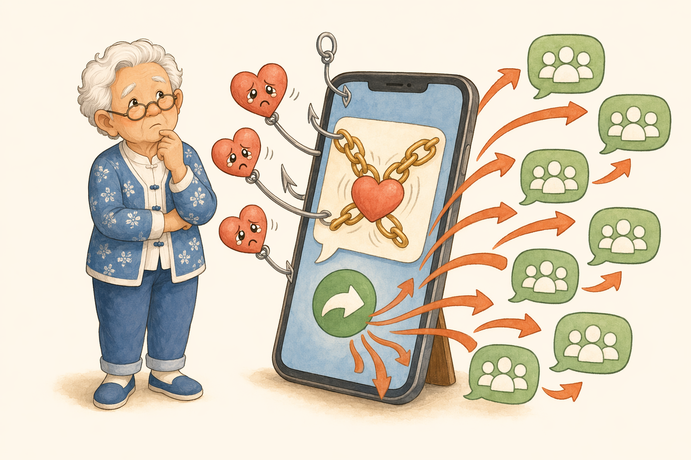

套路 ④
要求转发，还来「道德绑架」
「不转不是中国人」「转发积德」「看完不转会倒霉」「好人一生平安」「请保留两小时，别断在你这里」……
事实不靠转发次数变真，善良也不靠群发证明。
真正的好消息，不会威胁你转发；真正的善良，也包括不把没核实的消息传给别人。
群里常见这样
「转发这条锦鲤，今天不转全家不平安；转到3个群，好运马上来！」
🔎 破绽：用「倒霉／积德」逼你转——真事实，从不需要威胁。
